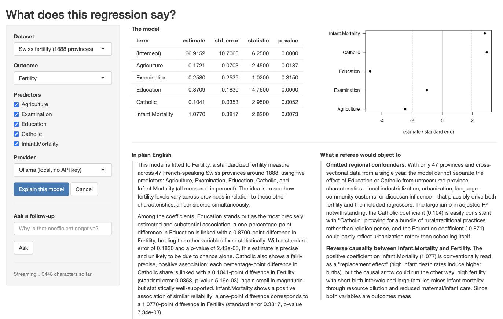

A Shiny app is a single R process that serves every connected user. R does one thing at a time, so whenever your app is busy, it is busy for everybody: nobody’s buttons work, nobody’s plots redraw. Work that occupies R this way is called blocking work.
chat() is blocking work. It sends a prompt, then sits
there until the model has written its last word, which can easily be
half a minute. Inside a Shiny app that half minute freezes the whole
app, for every connected user, not just the one who pressed the
button.
send_chat(), new in 0.6.0, is the verb that fits a Shiny
app. It sends the prompt and returns straight away, before the model has
answered anything. The answer arrives later, in small pieces, while your
app carries on responding to clicks.
This article walks through the patterns you need to turn that verb
into a working app. It assumes you have written a small Shiny app
before, so that ui, server,
observeEvent() and reactiveVal() are familiar.
It does not assume you have ever written asynchronous code.
Two Terms we will need
Two terms come up throughout, so it is worth pinning them down before any code.
The event loop. While your shiny app is waiting for
something, an incoming click, atimer, a reply from a web server, R is
not really idle. It sits in a loop that repeatedly asks “has anything I
am waiting for arrived yet?” and deals with whatever has. That loop is
the event loop, and it is what Shiny itself runs on: it
is how your app notices that a user pressed a button.
send_chat() puts its request into that same loop. Every
time the loop comes around, a bit more of the model’s answer is read off
the connection. This is why the app stays responsive: your app and your
model reply are taking turns in the same queue, instead of one waiting
for the other.
A job, which is a handle. send_chat()
does not return an answer, because at the moment it returns no answer
exists yet. It returns a job, and a job is a handle:
an object that does not contain the thing you want, but that lets you
ask after it. Think of it like the recipe at dry cleaning shop. It is
not your shirt, it tells you nothing about your shirt, and it stays
exactly the same slip of paper whether your shirt is still being cleaned
up or it is ready to collect. What it does is let you ask whether the
shirt is ready and to collect it.
A job works the same way. It is not the model’s answer, it does not grow as the answer is written, and everything you do with a request in flight goes through it:
| Function | What it does |
|---|---|
check_job(job) |
Returns the status: "running", "done",
"error" or "cancelled"
|
get_partial(job) |
Returns the text received so far |
fetch_job(job) |
Waits for the finished LLMMessage and returns it |
cancel_job(job) |
Stops the request and closes the connection |
That the job never changes has a practical consequence in Shiny, and
it is the first pattern below: the answer belongs in a
reactiveVal, and the job does not.
The Example App
The article follows a complete app that ships with the package. You can start it with:
library(tidyllm)
tidyllm_example_app("model_explainer")
The screenshot shows what it does. The app fits an ordinary linear regression to a small public dataset. Along the top are the results R computed: the table of coefficients and a plot of their confidence intervals. Underneath are two panels that fill with text as the model writes it. The left panel is a plain English explanation of what the coefficients mean. The right panel is a second, separate request to the same model, asked to play a sceptical journal referee and list objections to the regression. Those two panels are two independent jobs running side by side, which is why the app is a useful tour: it has to keep two streams of text moving while its own buttons still work.
The app defaults to a local ollama() model, so it runs
with no API key and no spend, and a dropdown switches it to Claude,
OpenAI or Gemini. Its source is a single file. To find out where it
landed on your machine, run
system.file("examples", "model_explainer", "app.R", package = "tidyllm").
The Shortest Streaming App
Everything else in this article is a refinement of the thirty lines
below. Two arguments to send_chat() do the work.
.stream = TRUE asks the provider to send the answer in
pieces as it is written, rather than in one block at the end.
.on_chunk is a function you supply that tidyllm calls once
for every piece that arrives. Those pieces are conventionally called
deltas, because each one is only the new text since the last
call, not the answer so far.
So the whole trick is: every time a delta arrives, glue it onto the
end of a reactiveVal. Writing to a reactiveVal
is all Shiny needs in order to redraw the output, so the text appears on
screen word by word.
library(shiny)
library(tidyllm)
ui <- fluidPage(
textInput("prompt", "Ask something", width = "100%"),
actionButton("go", "Send"),
tags$div(style = "white-space: pre-wrap;", textOutput("reply"))
)
server <- function(input, output, session) {
reply <- reactiveVal("") # the text on screen
job <- NULL # the ticket for the running request
observeEvent(input$go, {
reply("")
job <<- llm_message(input$prompt) |>
send_chat(
ollama(),
.stream = TRUE,
.on_chunk = function(delta) reply(paste0(isolate(reply()), delta))
)
})
session$onSessionEnded(function() {
if (!is.null(job) && check_job(job) == "running") cancel_job(job)
})
output$reply <- renderText(reply())
}
shinyApp(ui, server)Four small things in there deserve a sentence each, because they are the kind of detail that is easy to copy without understanding and hard to debug later.
The output is wrapped in
tags$div(style = "white-space: pre-wrap;", ...) because the
model’s answer contains line breaks, and HTML collapses those by
default. The wrapper is what stops a nicely paragraphed answer from
arriving on screen as one long run-on line.
job <<- ... uses the double arrow rather than the
usual <- because job was created outside
the observeEvent() block. A plain <- inside
the block would create a new job visible only
inside it, leaving the outer one NULL forever.
isolate() wraps the read of reply() inside
.on_chunk. Normally, reading a reactive value inside
reactive code tells Shiny “re-run me whenever this value changes”. Here
that would be circular, because this very line is what changes it.
isolate() means “let me read the current value without
signing up for notifications about it”, which is what you want whenever
you append to a reactiveVal by reading its own old
value.
session$onSessionEnded() registers a function to run
when the user closes the browser tab. Cancelling the job there matters
enough to have its own section below.
Finally, job is kept in an ordinary variable rather than
in reactiveValues(). That is deliberate, and it is the
first pattern worth stating properly.
Pattern: Keep the Job Plain, Keep the Text Reactive
Reactive machinery exists to redraw the screen when a value changes.
A job never changes, so putting one in a reactiveVal buys
you nothing. The text does change, and that is what your outputs should
watch.
With one job you can use a plain variable, as the app above does. With two or more it is tidier to keep them together, and the example app uses an environment for that:
server <- function(input, output, session) {
jobs <- new.env(parent = emptyenv())
jobs$plain <- NULL # the plain-English job
jobs$referee <- NULL # the sceptical-referee job
plain_text <- reactiveVal("")
# ...
}Why does it use an environment rather than a list? Because when you
pass an ordinary R object such as a list into a function, R hands over a
copy, so changes made elsewhere never appear in yours. Environments are
the exception: there is only ever one of them, and everyone who holds it
sees the same thing. tidyllm writes into a job long after the observer
that created it has returned, so a list would leave you holding a
snapshot of a job that has since moved on.
(parent = emptyenv() is tidiness: it stops a lookup that
finds nothing here from wandering off and picking up a variable of the
same name elsewhere in your app.)
Pattern: Poll for Status, Push for Text
.on_chunk tells you about text, and only about text. If
the request fails, no delta arrives, so .on_chunk is never
called and your UI would sit there looking as if nothing had happened.
Errors, completion, and anything else you want to put in a status line
have to be asked for rather than waited for.
An observer that re-runs itself every 400 milliseconds covers all of
it. invalidateLater() is the Shiny function that schedules
that repetition, and check_job() is cheap enough to call
several times a second:
status_text <- reactiveVal("") # drives a status line somewhere in the UI
observe({
invalidateLater(400, session)
if (is.null(jobs$plain)) return()
switch(
check_job(jobs$plain),
running = status_text(paste0(nchar(isolate(plain_text())), " characters so far")),
done = status_text("Done."),
error = status_text("The request failed. See the R console."),
cancelled = status_text("Cancelled.")
)
})This observer has a second, less obvious job. Each of
check_job(), get_partial() and
fetch_job() gives the event loop a turn while it runs, so
asking about a job is also what nudges it along. In a session where the
user is doing nothing at all, this ticking observer is what keeps the
reply flowing.
Pattern: Cancel, and Clean Up After the Tab Closes
cancel_job() closes the connection to the provider and
marks the job cancelled. Wire it to a button so the user can stop a long
answer. Then wire it a second time to the end of the session, because a
user who simply closes the browser tab halfway through leaves a
connection open and, on a paid provider, tokens being billed for text
nobody will ever read.
stop_jobs <- function() {
for (nm in c("plain", "referee")) {
job <- jobs[[nm]]
if (!is.null(job) && check_job(job) == "running") cancel_job(job)
}
}
observeEvent(input$cancel, {
stop_jobs()
status_text("Cancelled.")
})
session$onSessionEnded(stop_jobs)⚠️ Note: A cancelled job cannot be fetched afterwards. Calling
fetch_job()on one throws an error rather than waiting forever for an answer that will never come, so checkcheck_job()first if there is any chance the job was cancelled.
Pattern: Multi-Turn With an Immutable Message
Other packages give you a chat object that remembers the conversation
and that you add to as you go. tidyllm does not work that way. An
LLMMessage never changes once it has been created; a new
turn in a conversation is a new message made of the old
conversation plus one more line. Nothing is modified in place.
That suits Shiny well, because it means a conversation is just another value you can store in a variable. To ask a follow-up question: fetch the finished message, append the new question to it, and send the result.
Note that llm_message() does double duty here. Given a
string it starts a fresh conversation, which is how every earlier
example used it. Given an existing LLMMessage, as below, it
returns a new message consisting of that conversation plus your
text as the next turn.
observeEvent(input$ask, {
req(nzchar(input$followup), !is.null(jobs$plain))
if (check_job(jobs$plain) != "done") return()
conversation <- fetch_job(jobs$plain) |> llm_message(input$followup)
jobs$plain <- send_chat(
conversation, claude(), .stream = TRUE,
.on_chunk = function(delta) plain_text(paste0(isolate(plain_text()), delta))
)
})(req() in there is Shiny’s quiet guard: it abandons the
observer unless every condition given to it is true, which saves a nest
of if statements.)
Because the previous message is still a perfectly good value, features that sound ambitious turn out to be nearly free. Letting the user rewind one turn, or branch a conversation in two directions, costs you nothing more than keeping the older message in a second variable.
Pattern: A Provider Dropdown
Letting the user pick between providers is the cheapest feature in the app and the most convincing one: the same code path, four different APIs.
There is one wrinkle. The provider argument to
send_chat() is a function call, claude() or
ollama(), and you do not want those calls to happen when
the app starts up, because building a provider reads API keys and
settings that may only matter for the option the user actually picks. So
the app stores the calls unevaluated, using
quote(), and runs the chosen one with eval()
at the moment the button is pressed. quote(claude()) means
“the instruction to call claude()” rather than the result
of calling it.
Each entry also carries a concurrent flag, which the
next section explains:
PROVIDERS <- list(
"Ollama (local, no API key)" = list(call = quote(ollama(.model = "qwen3.5:4b")),
concurrent = FALSE),
"Claude" = list(call = quote(claude()),
concurrent = TRUE),
"OpenAI" = list(call = quote(openai(.model = "gpt-5.6-luna")),
concurrent = TRUE),
"Gemini" = list(call = quote(gemini()),
concurrent = TRUE)
)
# in the UI
selectInput("provider", "Provider", names(PROVIDERS))
# in the server
provider <- PROVIDERS[[input$provider]]
job <- send_chat(conversation, eval(provider$call), .stream = TRUE)Pattern: Two Jobs at Once, With One Limitation
Several jobs really do run at the same time. The example app streams its two panels from two separate jobs, and against a cloud provider they fill in together.
When R sends a request, the server first sends back a short preamble
describing the response (the headers), and only then the body,
which for a streaming reply trickles in piece by piece. A streaming
send_chat() returns as soon as those headers arrive, which
is normally within a second.
A server that only handles one request at a time, which is what a
stock Ollama install is, will not send headers for your second request
until the first request has completely finished. So the second
send_chat() sits there blocking, and while it blocks,
nothing is running the event loop, which means nothing is collecting the
first stream either. Both panels stall. Against claude() or
openai(), which handle many requests at once, both calls
return promptly and the two streams interleave properly.
That is what the concurrent flag in the provider list
records. When the provider can take both requests, the app sends both
immediately; when it cannot, it stores the second prompt and lets the
status observer start it once the first job is done:
if (isTRUE(provider$concurrent)) {
start_referee() # a helper in the app, not a tidyllm verb
} else {
jobs$referee_prompt <- referee_prompt # the status observer starts it later
}You can also fix the local case at the source. Ollama reads an
environment variable that tells it how many requests to serve at once,
so setting OLLAMA_NUM_PARALLEL=2 in your shell before
starting the Ollama server makes the local path behave like the cloud
one.
Pattern: R Computes, the Model Narrates
This last pattern is about trust rather than plumbing, and it is the reason the example app is a regression explainer rather than a chatbot. Language models are unreliable at arithmetic and quite willing to invent a plausible-looking number. So the app never asks the model to compute anything. Every number the model sees has been computed by R and pasted into the prompt verbatim, together with an instruction never to state a number that is not in the table:
model_as_markdown <- function(fit) {
tab <- coef_table(fit) # from summary(fit)$coefficients
# ... markdown table, observations, R-squared ...
}
prompt_plain <- function(fit, context) {
llm_message(paste(
"You explain regression output to someone who knows a little statistics.",
"\n\nData:", context,
"\n\n", model_as_markdown(fit),
"\n\nUse only the numbers in the table above. Never state a number that is",
"not there, and never describe a coefficient as an effect of one variable",
"on another; these are associations."
))
}The model is left doing the part it is genuinely good at, turning a table into readable sentences, and none of the part it is bad at.
⚠️ Note: One trap while assembling such a prompt. For a long formula,
deparse()returns a character vector of several strings rather than one string, andpaste()works element by element on vectors. Sopaste("Model:", deparse(formula(fit)))silently produces two mangled copies of your prompt instead of one good one. Collapse it first:paste(deparse(formula(fit)), collapse = " ").
What to Watch Out For
-
Your own blocking calls pause every job. Because
tidyllm collects replies on the event loop, anything that occupies R for
a while stops all streaming for its duration: a
Sys.sleep(), a longread.csv(), or a blockingchat()somewhere else in the app. -
Tool calls block. If you give a job
.toolsso the model can call R functions, the session pauses while those functions run and their results are sent back. -
No structured output while streaming on
claude()andopenrouter(). If you need.json_schemato get a strictly shaped answer back, send that job with.stream = FALSE. It still runs without blocking; you simply get the answer in one piece at the end rather than word by word. - A streamed job is not retried automatically. If the provider replies with HTTP status 429, its way of saying “you are sending too fast, slow down”, the job fails. Show the error in the UI and let the user press the button again.
If You Already Use shinychat or ExtendedTask
Nothing above needs any package beyond shiny and tidyllm. If you already work with the wider asynchronous tooling in R, though, a tidyllm job fits into it.
get_stream() turns a job into a stream of deltas of the
kind that shinychat::chat_append() knows how to consume, so
a chat UI is two lines:
job <- llm_message(input$prompt) |> send_chat(claude(), .stream = TRUE)
shinychat::chat_append("chat", get_stream(job))A job can also be converted into a promise, the standard R
object representing a value that will exist later. That is what Shiny’s
ExtendedTask expects, so non-streaming work drops straight
in:
task <- ExtendedTask$new(function(prompt) {
promises::as.promise(send_chat(llm_message(prompt), openai(), .stream = FALSE))
})Both routes are optional conveniences. .on_chunk writing
into a reactiveVal needs neither package.
The Same Machinery Outside Shiny
send_chat() is also useful outside of shiny. In a plain
script it is the fire-and-collect verb: dispatch a request, get on with
something else, collect the answer when you need it.
check_job() reports the status, get_partial()
gives the text so far, and fetch_job() waits for the
finished LLMMessage. Note that fetch_job()
waits by running the event loop rather than by sleeping, so anything
else you have in flight keeps making progress while it waits.
job <- llm_message("Summarise this 400-page report") |>
send_chat(claude(), .stream = TRUE)
other_work() # runs while the reply arrives
reply <- fetch_job(job) # the LLMMessage chat() would have returnedIf your problem is many prompts rather than one slow prompt,
parallel_chat() is the better verb. It takes a list of
messages, runs them against one provider with a cap on how many go at
once, and returns a tibble alongside the replies, which is the shape the
rest of a data pipeline wants. And when the answers can wait overnight,
send_batch() remains the cheapest option of all.